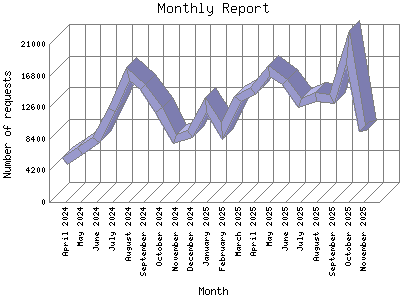

Analog 5.24
Analog 5.24 Report Magic for Analog 2.13
Report Magic for Analog 2.13The Monthly Report identifies activity for each month in the report
time frame. Remember that each page hit can result in several server requests
as the images for each page are loaded.
Note: Depending on the
report time frame, the first and last months may not represent a complete
month's worth of data, resulting in lower hits.

| Month | Number of requests | Percentage of the requests | |
|---|---|---|---|
| 1. | November 2025 | 9,463 | 3.79% |
| 2. | October 2025 | 20,664 | 8.28% |
| 3. | September 2025 | 13,680 | 5.48% |
| 4. | August 2025 | 14,004 | 5.60% |
| 5. | July 2025 | 13,123 | 5.26% |
| 6. | June 2025 | 15,990 | 6.40% |
| 7. | May 2025 | 17,388 | 6.97% |
| 8. | April 2025 | 14,694 | 5.89% |
| 9. | March 2025 | 13,704 | 5.49% |
| 10. | February 2025 | 9,480 | 3.80% |
| 11. | January 2025 | 12,906 | 5.17% |
| 12. | December 2024 | 9,037 | 3.61% |
| 13. | November 2024 | 8,328 | 3.33% |
| 14. | October 2024 | 12,169 | 4.88% |
| 15. | September 2024 | 15,284 | 6.12% |
| 16. | August 2024 | 17,040 | 6.82% |
| 17. | July 2024 | 12,292 | 4.92% |
| 18. | June 2024 | 8,277 | 3.31% |
| 19. | May 2024 | 6,815 | 2.72% |
| 20. | April 2024 | 5,403 | 2.17% |
Most active month October 2025 : 20,664 requests handled.
Monthly average: 12487 requests handled.
This report was generated on November 17, 2025 01:09.
Report time frame April 8, 2024 11:04 to November 16, 2025 04:46.
| Web statistics report produced by: | |
| Analog 5.24 | Report Magic for Analog 2.13 |